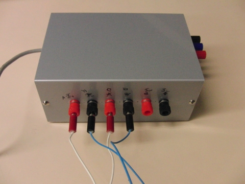
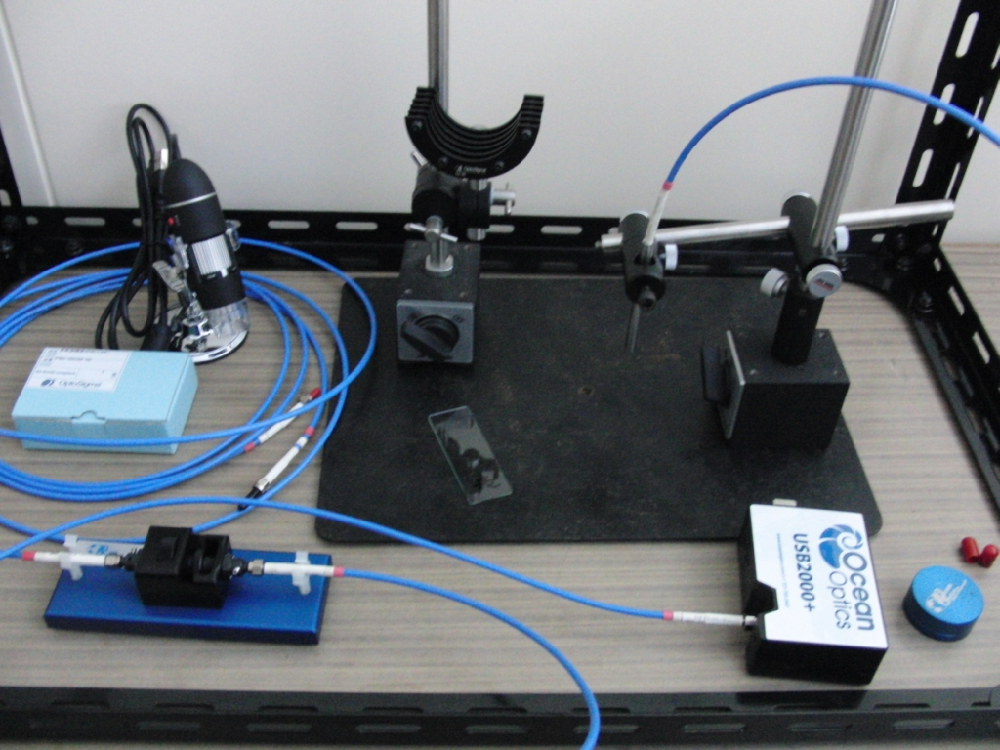

本研究室では、電子材料・磁性材料・光学材料に関する研究を行っています。
分子線エピタキシー装置

油回転真空ポンプ、油拡散ポンプおよびチタンサブリメーションポンプから作り出される超高真空（10-8
Pa程度）の成長炉の中で、薄膜結晶成長を行うための装置です。
薄膜には、金属、半導体、絶縁体、強磁性体などがあります。
目的とする物質の原料となる１～３種類の金属を加熱蒸発させ、土台となる半導体結晶基板上に蒸着させます。
真空度が高いため、蒸発した金属分子は、ビーム状になり基板に飛んで行くため、そのような状態を分子線（molecular beam）と呼んでいます。
ロードロック機構を備え、成長炉を高真空に保ったまま、試料の出し入れができます。
ロードロックチャンバーには油回転真空ポンプとターボ分子ポンプが備わっています。
真空装置

油回転真空ポンプと油拡散ポンプの２つの真空ポンプからなり、高真空を作るために用います。
真空中熱処理などに利用しています。真空蒸着や真空中熱処理などに利用。
ホットプレート、ホットプレート付きマグネチックスターラー


ホットプレートは基板に塗布したゾルゲル法や金属有機化合物分解法で用いる原料溶液を、乾燥したり、仮焼成するために使用しています。スターラーはゾルゲル溶液を撹拌するときに用います。また、ホットプレート付きなので加熱しながら撹拌できます。よく使うので複数台所有。
電気炉

薬品や試料を加熱するために用います。最高で900度まで加熱することができます。粉末やゾルゲル膜を焼結するために利用しています。
上の電気炉は、元々On/Off制御だったものをPID制御できるように、温度調整器を交換しました。
また、リレーも機械式からソリッドステートリレーに変更しました。
デシケーター

作製した試料を保管する容器です。半導体や金属の劣化を防ぐために中は真空になっています。複数台所有。
金スパッタ装置
画像準備中
金の電極を形成したり、酸化を嫌う薄膜材料の保護のために使用しています。
スピンコーター
画像準備中
ゾルゲル法や金属有機化合物分解法の原料溶液を基板に塗布し、台を回転させ遠心力で薄く引き伸ばしてコーティングする装置です。 真空チャック付です。真空に引っ張られて基板の裏に溶液が周り込む問題があります（解決したい）。
スピンコート・コントローラ

ゾルゲル法や金属有機化合物分解法の原料溶液を基板に塗布し、台を回転させ遠心力で薄く引き伸ばすコーティング方法をスピンコート法と呼びます。
このときの回転速度を制御するコントローラです。自作でPIC、バイポーラトランジスタ、FETでできています。
Van der Pauw法による抵抗率測定装置

半導体や金属薄膜の抵抗率を測定する方法のひとつにVan der Pauw法があります。 この装置はUSBでパソコンとつながっており、半自動で抵抗率を測定できます。 自作したもので、PIC、リレー、計装アンプでできています。 パソコン側の測定プログラムはVisual Basic2008で作成しました。
蛍光、透過率、反射率測定装置

蛍光体の発光波長の分光や、ハロゲンランプを使った透過率・反射率測定を行なえます。 酸化物半導体や硫化物半導体のバンドギャップの評価にも利用できます。